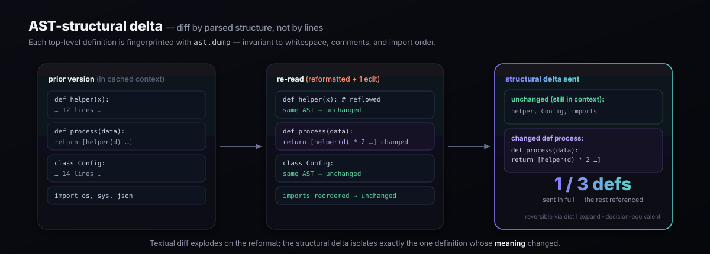

Compression Techniques
Each technique targets a specific slice of agent cost, but two carry the bulk of the win: cache-aware lossless compression keeps the prefix byte-stable so every cached token stays cached, and causal pruning drops what ablation proves never changed a decision. The rest stack cleanly on top — and one of them, recoverable compression, is something no lossy compressor can structurally replicate.
distil/expand.py · distil proxy --expand. Every other compressor is lossy — crush a tool output and the detail is gone. Distil digests large outputs behind a content handle and keeps the original locally, then injects a distil_expand tool so the model can pull back exactly the detail it needs, on demand. Distil resolves the handle from the local store and re-queries transparently, before the agent ever sees the response. Two consequences a lossy compressor cannot offer: (1) you compress fearlessly, because nothing is permanently discarded and the model is its own safety net; (2) every distil_expand call is a label that the digested content mattered, feeding the learning flywheel that stops digesting what your workload depends on. Proven end-to-end in tests/test_expand.py.
Content-aware skeleton digest
Module: distil/compress/skeleton.py · Active-recovery tier (+distil_expand) · Loss profile: reversible
For the active-recovery tier (ungated, condition D in E8), large source files are digested to a navigable skeleton rather than a blank handle. The transform keeps every import, class, and def signature with its docstring, retains traceback tail lines, and elides function bodies. The agent can locate any definition from the skeleton and issue a targeted distil_expand call for just the body it needs — rather than re-expanding an entire file to find one method.
- Deterministic and stdlib-only. No model call, no network access — the skeleton is produced by a deterministic parse of the source text. This makes it auditable and safe in restricted environments.
- Byte-exact reversible. The full original is stored locally and recovered byte-exactly via its content handle. Decision-equivalence with recovery: 0% change rate. Raw decision-equivalence (without recovery): ~96%, consistent with other reversible methods — safety comes from reversibility, not the raw rate.
- Measured impact in E8. Skeleton digest lifted the ungated (D) condition's pass@1 from 28.8% to 32.4%, by cutting re-expansion thrash from ~9.6
distil_expandcalls per instance to fewer directed lookups.
Sticky expansion
Module: distil/expand.py · Loss profile: reversible
Once the agent recovers a digested block via distil_expand, that block is marked sticky and stays at full fidelity for all subsequent turns in the session. Handles are deterministic (content-addressed), so the suppression key is stable — no re-compression of a block the agent has already demonstrated it needs.
Two effects:
- Eliminates re-expansion thrash. Without sticky expansion, an agent that re-reads a frequently-accessed file re-digests it each turn and must expand it again. With sticky expansion the file stays full after the first recovery, spending zero additional expand calls on it.
- Never-regressing by construction. Stickiness only ever makes distil more conservative — it can reduce savings on a repeatedly-accessed file, never reduce decision-equivalence. The learning flywheel (below) encodes the same intuition at the content-class level; sticky expansion enforces it at the instance level within a session.
① Cache-aware compression
Module: distil/compress/cache_aware.py · Loss profile: lossless
The dominant cost lever in a multi-turn agent loop is not token count — it is cache hit rate. A cache read costs roughly 0.1× fresh input; a cache miss costs full price. Distil models the full multi-turn loop, tracking the longest contiguous prefix that is identical between consecutive turns. Any compressor that rewrites that prefix — even to save tokens — destroys the prefix match and loses the 10× discount.

Cache stabilization
Two lossless pre-processing steps run before any compression, keeping the prefix byte-stable turn over turn:
- Schema canonicalization — recursively sorts JSON object keys in tool payloads and API responses. Two semantically identical JSON objects with different key orders produce byte-identical text after canonicalization and hit the prefix cache.
- Volatile-field extraction — fields that change every turn (timestamps, UUIDs, JWT tokens, request IDs) are lifted out of the stable prefix into the volatile tail. The stable portion stops churning; the volatile tail is compressed separately.
The simulation
cache_aware.simulate() models four strategies across a full trajectory and reports per-turn cost breakdown — cache reads, cache writes, fresh tokens. Run distil savings to see the numbers on any trajectory.
$ distil savings --pricing claude-opus-4-8 strategy $ / run vs baseline cache hits ------------------------------------------------------------------------ baseline (no cache, no compress) 0.01524 0.0% 0 cache only 0.01115 26.8% 1,028 naive compress + cache 0.01691 -11.0% 0 ← busts cache distil (cache-aware lossless) 0.01019 33.1% 1,028
② Salience protection (frontier shifter)
Module: distil/compress/salience.py · Loss profile: lossless
Lossless compression is safe by construction, but it is also blind — it will happily drop the one line that carries the agent's decision if that line happens to be compressible. Salience protection is a model-free guard that runs before any content reduction and marks lines that must survive regardless of savings pressure.
Four signals combine, all computed from the text alone (no external model call, no learned weights):
- Pattern matching — known identifier shapes (UUID, git SHA,
PREFIX-NNN, email, IPv4, semver, file paths). - Entropy scoring — high-entropy mixed-alnum tokens carry information-dense content (novel ID formats no fixed pattern anticipates) and are protected regardless of keyword matches.
- Cross-reference detection — a token referenced in two or more blocks is an anchor the agent navigates by, treated as load-bearing even if it looks inert in isolation.
- Surprise (
surprise_lines) — error/failure/timeout/anomaly lines and unified-diff changed lines, over-retained regardless of the other three signals because a lossy compressor drops the incongruent detail first, and that detail is what decides the next action. - Query relevance (
compress/intent.py) — lines matching a salient term from the agent’s own request (tool-use arguments, the latest user ask) are additively pinned. distil is a proxy: the query and the output arrive in the same request, so the relevant line is kept even when no fixed rule knows which line matters. A selectivity guard drops terms matching most lines, preserving compression when intent is too broad.
Protection is line-aware: the guard operates on individual lines, not blocks, so it can preserve a single critical row inside an otherwise-compressible table. The cost is a small savings reduction — roughly 2.4 percentage points on the benchmark corpus — in exchange for a structural guarantee.
③ Causal / counterfactual pruning
Module: distil/replay/ablation.py · Loss profile: certified
The eval engine in Distil is a discovery engine. The algorithm:
- For each context block in the trajectory, remove it and replay the trajectory.
- Record whether any turn's decision changed.
- A block that never changed a decision across all its occurrences is causally inert — provably safe to drop.
This is the sense in which measurement produces the compression policy. Speculative retrievals never cited, stale history that no longer affects any tool call, diagnostic context superseded by later turns — these all show up as zero-impact in ablation and can be pruned with a causal guarantee, not a heuristic guess.
$ distil prune causal ablation over 'sre-disk-incident' — what is free to drop? block occ tokens verdict doc-0 4 312 PRUNE (causally inert) doc-1 4 303 PRUNE (causally inert) obs-0 4 234 keep (changed a decision) obs-1 4 198 keep (changed a decision) system 4 218 keep (changed a decision) tokens provably free to drop: 615 across 2 block(s).
claude-opus-4-8), running at ~0.026 ms/turn — roughly 1,000× faster than model-based alternatives. The certified guarantee uses Learn-Then-Test / CRC (arXiv:2110.01052 / 2208.02814), distribution-free and valid at finite sample size.
Risk-graded tiers
Every technique is assigned to a tier based on its loss profile. Distil applies them in order — lossless ones unconditionally, certified-lossy ones only when the gate passes.
Provably lossless
Reconstructable transforms with no assumptions about content semantics. Applied unconditionally.
- JSON minification
- Run-length encoding collapse
- Whitespace normalization
Module: compress/tier0.py
Reversible digest
Decision-aware digest: the compressed form embeds an 8-hex handle; the original is kept locally and re-expands on demand.
- Large tool results (≥ 6 lines) digested
- Handle → original in local RestoreStore
- Reject-if-bigger invariant enforced
Module: compress/tier1.py
Lossy, gated
Pruning applied only at ratios the non-inferiority gate certifies. Never ships without a TOST PASS.
- Causal pruning (ablation-discovered)
- Lossy strategies blocked if gate fails
- Subscriptions: lossless-only policy
Gate: certify/gate.py
Keep-model codec (pluggable)
Modules: distil/codec/learned.py · distil/codec/transformer.py · Loss profile: pluggable
For per-line decisions about which content in a tool result is worth keeping, Distil exposes a pluggable KeepModel seam. Three implementations ship, from the heuristic default through to a retrain-on-your-traces transformer.
The three tiers at a glance
| Model | Accuracy (held-out) | F1 | Dependencies | When to use |
|---|---|---|---|---|
| SalienceKeepModel (heuristic) | — | — | None (stdlib only) | Default. Rule-based: error keywords, digit density, structure detection. Zero training cost. |
| LogisticKeepModel (built-in) | 96.4% | 0.98 | None (stdlib only) | Trained on corpus labels derived from the heuristic. Ships in the wheel as codec/weights.json. Zero extra installs, better generalisation than rules alone. |
| TransformerKeepModel (upgrade) | 96.3% (demo) | 0.98 (demo) | pip install 'distil-llm[train]' |
ONNX inference adapter. Retrain on your own traces for production quality. Demo checkpoint on the v0.1.0 release. |
Heuristic default — SalienceKeepModel
distil/codec/keep_model.py · A deterministic rule-set that fires on error keywords, command verdict lines (1955 passed, BUILD SUCCESSFUL, exit codes — pinned at the never-drop floor, because a green run’s answer carries no error word), structured data markers (DECISION:, key:value lines, pipe tables), digit density, and debug-noise keywords. Always available; no training step, no external dependencies.
The Tier-1 digest also classifies each block by content kind before applying these rules (distil/compress/keep_policy.py): a log block pins its pass/fail verdict lines (3 passed, BUILD SUCCESSFUL), a traceback pins every stack frame (File "…", line N), and a diff block pins file and hunk headers — each on top of the shared DECISION:/error base net.
Logistic keep-model — built-in, zero-dep
distil/codec/learned.py · A logistic-regression classifier trained entirely in pure Python (stdlib only), implementing the same KeepModel protocol. Key design decisions grounded in the source:
- Feature set: nine features defined in
codec/features.py— bias, decision-marker indicator, error keywords, structured-data signal, digit density, length, debug keywords, uppercase ratio, blank-line flag. All normalized to [0, 1]. - Training: full-batch gradient descent on binary cross-entropy with L2 regularization (
l2=1e-4, 400 epochs). Labels are derived fromSalienceKeepModel: a line is labelled keep (1.0) if the heuristic scores it ≥ 0.6. - Train/test split: deterministic, SHA-256 hash of the raw line — reproducible across machines with no random seed dependency.
- Held-out performance: 96.4% accuracy, 0.98 F1 on the bundled corpus test split. The labels are distilled from the salience heuristic, so this measures agreement with that label source, not an independent ground truth.
- Weights: persisted to
distil/codec/weights.json; load withLogisticKeepModel.load(). The weights ship inside the installed wheel — no training step required.
Transformer keep-model — ONNX inference adapter
distil/codec/transformer.py · An ONNX-backed token-classification transformer implementing the same KeepModel protocol. Heavy deps (onnxruntime, transformers) are lazy-imported so the stdlib core runs untouched. This class is the inference adapter only — it does not ship a pretrained checkpoint.
- Inference: tokenizes each line, runs the ONNX session, applies softmax over the label axis, and aggregates per-token keep-probabilities via mean of top-3 — more robust than plain mean on mixed-content lines.
- Never-drop floor: any line containing
DECISION:is forced to score 1.0 regardless of model output, matching theSalienceKeepModelguarantee. - Demo checkpoint: a checkpoint trained on the bundled corpus (96.3% acc / 0.98 F1) is attached to the v0.1.0 release. This is a demo — for production quality, retrain on your own traces.
- Loading:
TransformerKeepModel.from_pretrained(onnx_path, tokenizer_dir). Requirespip install 'distil-llm[onnx]'for inference, or'distil-llm[train]'to train.
distil ingest to convert your request logs into a corpus, then distil train-transformer --out ./my-keep-model to produce a checkpoint tuned to your traffic.
Training the transformer on your traces
distil/codec/train_transformer.py · Fine-tunes a HuggingFace token-classification model (default: google/bert_uncased_L-2_H-128_A-2, ~4 MB) using the same label pipeline as the logistic model, then exports to ONNX. Requires the train extras.
$ pip install 'distil-llm[train]' # Train on the bundled corpus (replace with --corpus ./mycorpus for real traces) $ distil train-transformer --out ./my-keep-model Epoch 1/3 train_loss=0.4821 Epoch 2/3 train_loss=0.2134 Epoch 3/3 train_loss=0.1589 Exported ONNX to ./my-keep-model/model.onnx Accuracy=0.9630 F1=0.9812 Load with: TransformerKeepModel.from_pretrained('./my-keep-model/model.onnx', './my-keep-model') # Use the checkpoint via the Python API from distil.codec.transformer import TransformerKeepModel model = TransformerKeepModel.from_pretrained( "./my-keep-model/model.onnx", "./my-keep-model", ) score = model.score("ERROR: disk at 94% capacity", "tool_output") # → 0.97 (keep)
KeepModel protocol and are interchangeable at the seam.
Gist caching
Module: distil/gist.py · Loss profile: lossless
Tool schemas are verbose and change rarely within a session. Gist caching detects when the same tool schema has been sent before (by content hash) and replaces subsequent occurrences with a compact reference handle. The model sees the full schema once; subsequent turns pay only for the reference token. Implemented as a content-addressed local cache — no network calls, no external state.
Delta / append-only context
Module: distil/delta.py · Loss profile: lossless
Context history is append-only — a block present in turn N must carry identical bytes in turn N+1 (enforced by the byte-fidelity gate). The delta engine exploits this: only the new blocks added since the last turn are transmitted at full cost. Stable history is already in the cache and costs only cache-read price. The delta layer ensures no block is re-sent in a way that would corrupt the prefix hash.
BM25 partial retrieval
Module: distil/retrieval.py
When a context block is digested (Tier 1) and represented by a handle, BM25 partial retrieval lets the agent query the most relevant chunks of the original without re-expanding the entire block. This keeps the context window focused while preserving access to the full original content — useful for large tool outputs, retrieved documents, or log dumps where only a fraction is decision-relevant.
Reversible structured compaction
Module: distil/compress/structured.py · in the Tier-1 path · Loss profile: lossless
The content agents actually traffic in — JSON record arrays, SQL rows, telemetry — is re-encoded into a compact columnar form: repeated keys stated once, values listed as rows. A homogeneous array of N records pays its keys and punctuation N times in JSON; the folded form pays them once — typically a 40–70% reduction with no loss of meaning. Unlike lossy structural crushing, nothing is discarded: the byte-exact original is kept in the restore table and is one expand() away.
The same fold runs on the live subscription / lossless path in a self-describing form — the compact table is emitted inline with no restore handle, so there's nothing to expand and nothing that invites a distil_expand the flat-rate client can't issue. Fewer tokens per turn, fully in-context, ToS-safe: the real subscription win even when there's no per-token bill to cut.
Template mining (Drain / LogPai family)
Module: distil/compress/structured.py · template_fold() · Loss profile: lossless
Logs and telemetry are runs of near-identical lines that differ only by a timestamp, ID, or number. Where run-length encoding only collapses byte-identical lines, template mining masks the varying tokens, groups lines by their skeleton, and collapses a run into one template + a compact variable table — the production log-parsing technique (Drain / LogPai), applied to agent context. Every variable is retained; the original is fully recoverable. On log-heavy content this lifts lossless savings several points on its own.
Cross-turn dedup (streaming)
Module: distil/compress/dedup.py · StreamingDedup · Loss profile: lossless
Agents re-read the same artifact — a file, a log, a design doc — every turn. Prompt caching only discounts the contiguous prefix, so a large block that recurs in the volatile tail is re-billed in full each time it reappears. The streaming compressor remembers what it has already sent and replaces a recurring inert block with a compact reference, recoverable on demand. It only references blocks that carry no decision marker. This is the lever that turns a multi-turn loop's quadratic re-read cost into near-linear, on exactly the content the prefix cache cannot reach. See the Benchmark for the measured contribution.
Cache-delta context coding (coding-agent hot path)
Module: distil/cachedelta.py · distil proxy --session-delta · opt-in · Loss profile: lossless

Multi-turn coding agents (Claude Code, Codex, Gemini CLI) loop on read → edit → re-read. The re-read file is a near-duplicate of what the agent already has in context — one hunk changed. Exact-duplicate dedup (the state of the art elsewhere, e.g. Headroom's dedup_identical_items) misses it entirely and re-sends the whole file. Cache-delta coding handles both cases, confined to the volatile suffix so the stable, already-cached prefix is never touched:
- Exact re-send → back-reference (a compact pointer to the earlier occurrence already in cache).
- Near-duplicate → reference + unified diff (only the changed hunk is transmitted).
Both transforms preserve cache-monotonicity: the stable prefix is never mutated, so every prompt-cache hit that existed before the turn still exists after it. The prior version of the file remains present earlier in the cached conversation, so prior version + diff carries the same information the agent needs to take its next action — decision-equivalent by construction. The full file is recoverable byte-exact via distil_expand.
AST-structural delta (deepest layer of cache-delta)
Module: distil/astdelta.py · stdlib ast · model-free · Loss profile: lossless

The deepest layer of cache-delta coding. For Python source, the cross-version diff operates on parsed structure rather than raw text: each top-level definition is fingerprinted with ast.dump (attributes off), which is invariant to whitespace, comments, and import order. Two consequences a textual diff cannot offer:
- A reformat-only re-read — whitespace changes, comment edits, import reordering — is recognised as "no definition changed" and referenced whole. Textual diff would produce a large spurious patch.
- Only definitions whose AST actually changed are sent in full. Everything unchanged is a back-reference, regardless of how many lines moved around it.
Non-Python files and unparseable source (mid-edit, syntax errors) fall back automatically to the standard unified diff — the technique never fails a request, it just does less when the AST is unavailable.
ast module only. No external parser, no learned weights, no network calls.
Certified-fallback & the equivalence dial
Module: distil/compress/adaptive.py · certified_fallback · distil frontier
The aggressive digest is recoverable but not byte-identical to the model's eye, so on genuinely ambiguous decisions it can occasionally tip a different (still reasonable) choice. Certified-fallback removes that risk by construction: for each turn it keeps the most aggressive transform only if a runner confirms the decision is unchanged — else it falls back to byte-exact Tier-0, else to no compression. The result is 100% decision-equivalent by construction under whichever runner you pass — the free structural runner, or the live model itself (--runner anthropic).
On top of that sits the equivalence dial, target_equivalence. At 100% you get certified-safe compression. Relax it — say 0.95 — and Distil grants a bounded divergence budget of floor((1−target) × turns) turns that keep the deepest transform even when it changes the decision, spending the budget on the highest-saving turns first. You trade a measured, explicit amount of equivalence for deeper savings — never a hidden one. Trace the full curve with distil frontier.
The learning flywheel (self-improving)
Module: distil/learn.py · distil learn
This is what makes recoverable compression compound. Every distil_expand call is ground truth that a digested block was load-bearing. Distil tallies these by a coarse, content-free signature (content class × size bucket, e.g. json:l — never the content itself) and learns which signatures your agents keep expanding. Those it stops digesting, keeping them byte-exact. Because the policy only ever makes Distil more conservative, it is never-regressing by construction — it can reduce savings on an expand-prone signature, never reduce decision-equivalence — so it needs no gate to be safe. The stats live locally (atomic writes, content-free); inspect the learned policy with distil learn. The more your agents run, the better the fit to your workload.
Module: distil/compress/guideline.py · a second flywheel learns from the coarser signal that actually matters at the task level: the trajectory outcome. Every matched full/compressed run fed to distil certify-trajectories is evidence — when a task the full context solved fails under compression, the content-free signatures digested in that run are suspects; signatures whose digestion keeps co-occurring with regressions get protected, kept byte-exact, automatically. It is never-regressing by the same construction as the expand flywheel above, just driven by end-to-end task success instead of a per-step expand request. See Concepts → The trajectory-level certificate.
Salience protection's fourth signal, surprise (above), applies this same intuition ahead of time: error, failure, timeout, and anomaly lines are over-retained by default, because a lossy compressor drops the incongruent detail first — and that detail is what decides the next action.